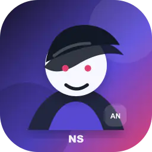

Recherche active
Chaque offre est comparée à vos axes: logiciel, IA, embarqué, job étudiant.
Candidature IA. Controle humain. Vitesse SaaS.
BotJob associe chaque offre à votre bonne recherche, génère les rendus utiles et garde vos candidatures lisibles, traçables et prêtes à relire.
React, API, automatisation, anglais B2
Compatibilité: 91%

Validation à chaque rendu
Moteur BotJob
La landing reste statique pour le SEO. L’application privée, elle, pourra devenir une SPA React/TypeScript connectée au back Bun/TypeScript.
Chaque offre est comparée à vos axes: logiciel, IA, embarqué, job étudiant.
BotJob ne bloque pas bêtement. Il signale l’écart et propose le meilleur angle.
CV, lettre, message et suivi peuvent être validés ou réécrits étape par étape.
Parcours
Vous collez l’offre et BotJob extrait le signal utile.
L’offre est associée à la meilleure recherche de job.
Les rendus sont créés avec templates maîtrisés.
Le mode choisi décide des pauses, timers et validations.
Motion ready
Les animations utilisent surtout `transform` et `opacity`, ce qui les rend fluides et faciles à enregistrer avec Playwright + ffmpeg quand l’encodeur sera installé.
Score recherche: 93%
Mode Assisté actif
Historique sauvegardé